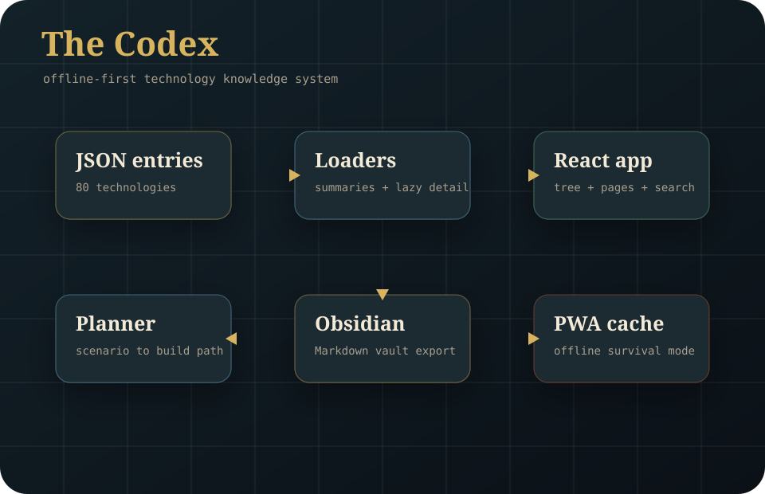
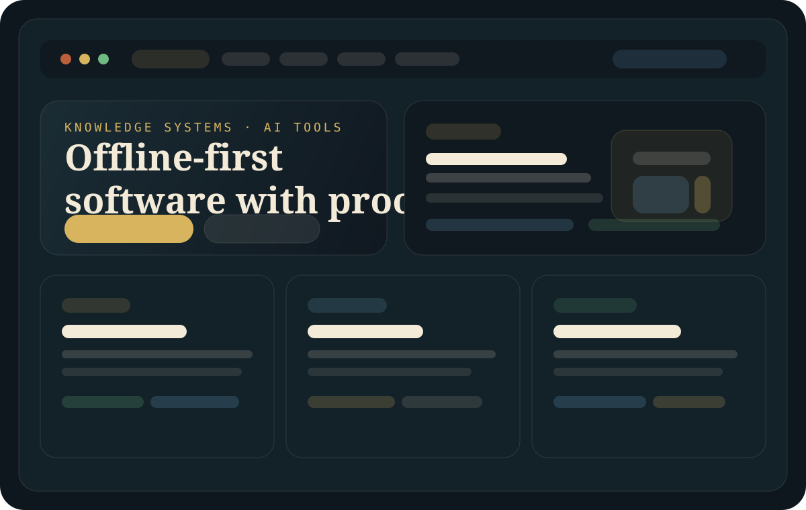

The Codex
Public PWA, GitHub Pages deployment, structured JSON content system, planner tools, and case-study depth.
Knowledge systems · AI tools · resilient software
This portfolio is for teams, founders, and mission-driven groups that need software with real structure: clear data models, honest constraints, deployable builds, and products that stay useful when networks, budgets, or workflows are messy.
Fast proof
The portfolio should reduce doubt fast: live links, working repositories, concrete build scopes, and a clear sense of what I can ship in a short engagement.

Public PWA, GitHub Pages deployment, structured JSON content system, planner tools, and case-study depth.

Static site with responsive layout, GitHub Pages hosting, project pipeline, specs, and public case-study framing.
Positioning
Projects begin with a real problem, a user, a workflow, and a reason the tool should exist.
Each project should show architecture, data modelling, testing, deployment, and maintainability.
A reviewer should be able to open the project, understand it quickly, and see working software.
Portfolio pipeline
The first project is live in the portfolio now. The others are intentionally scoped as serious next builds, not throwaway tutorial clones.
A visual, interactive encyclopaedia of human technology, designed for collapse recovery and space settlement. Includes a tech tree, documentary entries, planner mode, Obsidian export, and offline support.
A company foundry for designing, scoring, comparing, and scaffolding Paperclip-compatible AI-operated companies with offers, agents, projects, skills, pipelines, QA gates, risks, and launch actions.
A local-first assistant for Markdown vaults: semantic search, missing-link detection, duplicate notes, summary generation, and question answering over private notes.
A dashboard for AI-assisted software projects: task board, agent activity, commit summaries, risk flags, build status, and project memory.
A lightweight scanner for secrets, unsafe config, dangerous generated code patterns, and missing repo hygiene before AI-assisted commits go public.
A tool that generates technical diagrams and simple 3D explainers from structured specs, eventually feeding media back into The Codex.
Humanity lab
These are portfolio projects designed to be socially useful and technically credible. Each one can become a standalone repository with a demo, case study, tests, and deployment path.
An offline-first coordination app for neighborhoods when internet service fails. It stores maps, checklists, radio frequencies, supply requests, and message logs that can sync over local Wi-Fi or exported files.
A mobile-first tool that teaches water risk identification, treatment choices, storage discipline, and low-tech testing. It should work offline and avoid giving unsafe certainty.
A repair knowledge base for bicycles, radios, pumps, lights, small engines, and household tools. It should emphasize diagnosis, safe disassembly, common failures, and salvageable parts.
A planning tool that estimates calories, crop timing, water needs, storage, preservation, and community garden outputs for a household or neighborhood.
A browser tool that turns messy web pages into clean, printable, accessible reading packs with larger text, better contrast, simplified layout, and citation preservation.
A local risk-preparation planner for heat, flooding, outages, wildfire smoke, water interruption, and food disruption. It outputs practical household tasks instead of abstract risk scores.
Unbuilt gaps
These ideas are selected for neglected usefulness: they help people prepare, learn, repair, coordinate, or access knowledge without depending on perfect networks, expensive SaaS, or institutional permission.
Inventory, requests, volunteers, delivery routes, and accountability for small community groups.
Read specOffline symptom, allergy, medication, and consent cards for travel, clinics, shelters, and emergencies.
Read specBorrowing, maintenance, safety checks, repair history, and training notes for shared practical tools.
Read specOffline lessons, worksheets, teacher notes, and progress exports for schools with weak internet.
Read specNeighborhood reports for floods, outages, blocked roads, smoke, heat islands, and unsafe infrastructure.
Read specJurisdiction-aware checklists that translate complex rules into practical next actions and limitations.
Read specBuild queue
The portfolio needs a disciplined sequence: finish visible proof, then build the highest-impact projects that can be shipped as small offline-first demos.
Highest proof value because it already exists and shows the full thesis: knowledge, resilience, AI, and offline access.
Best next public-good MVP: clear user, offline-first architecture, data modelling, and immediate real-world relevance.
Strong impact, but must be handled carefully with conservative safety copy and public-health citations before release.
Commercially useful and technically strong; pairs well with the public-good tools because it improves knowledge workflows.
Repair knowledge base with searchable diagnostics, tools, safety warnings, repair steps, local notes, and print checklists.
Work with me
The goal is not to look busy. It is to show what I can build, who it is for, and how a small engagement can turn into working software with visible proof.
Every serious project gets a live demo, screenshots, architecture notes, validation commands, and a case study. This builds credibility faster than claims.
The strongest identity is not generic web development. It is useful software for knowledge, resilience, AI workflows, safety, repair, accessibility, and community preparedness.
The portfolio should lead to freelance builds, AI workflow consulting, local-first knowledge systems, documentation tools, sponsorship, and eventually small paid products.
Main offer
I can help turn scattered notes, documents, repos, or operating procedures into searchable, structured, offline-capable systems with clear data models and practical AI assistance.
Service track
Build focused web apps and PWAs for people who need working tools: dashboards, planners, offline guides, public-good resources, and data-driven interfaces.
Service track
Improve AI-assisted development workflows with task tracking, repo hygiene, secret scanning, review checklists, and clear verification before publishing.
Engagement model
Start with one narrow build that proves the architecture, then turn repeated patterns into internal tools, reusable templates, or public-facing products.
Availability
Small teams, founders, labs, and public-interest groups that need an MVP, a knowledge system, or a workflow tool with stronger structure than a throwaway prototype.
Opportunity funnel
Contact path
If you want to discuss a build, prototype, or collaboration, email is the fastest public path. GitHub is still available for project-specific discussion, feedback, and issue tracking.
Funding path pending.
Featured case study
The Codex started as a tech tree and grew into an offline-first reference system for rebuilding capability from first principles. It is built around the question: what would someone need to know if supply chains, internet access, or Earth itself were unavailable?
More case-study angles
Not every project needs a full essay yet, but each flagship should still answer problem, approach, and payoff.
Problem: AI-company ideas are usually fuzzy, unscored, and hard to operationalize.
Approach: Turn ideas into structured blueprints with offers, risks, agents, and launch actions.
Payoff: Shows product thinking, schema design, scoring systems, and reusable automation packaging.
Problem: Strong builders often look scattered because proof is buried in repos.
Approach: Present live work, project rationale, build order, and service fit in one public surface.
Payoff: Turns execution into trust for hiring, partnerships, and future product launches.
Technical signal
These are the technologies the portfolio should repeatedly demonstrate with working projects.
TypeScript, React, Vite, offline-first PWA patterns, accessible UI, and strong visual design.
Embeddings, local/remote model adapters, agent workflows, evaluation, safety checks, and audit trails.
Node or Python services, PostgreSQL/SQLite, JSON schemas, search, queues, and practical API design.
Docker, GitHub Actions, deployment docs, reproducible builds, and security scanning.
Execution plan
Add live deployment, screenshots, demo video, and a stronger README architecture section.
Turn the real Obsidian workflow into a local-first AI product with a clear demo.
Show full-stack engineering by connecting tasks, commits, agents, and verification.
Round out the portfolio with a scanner and a visual/3D project that makes it memorable.